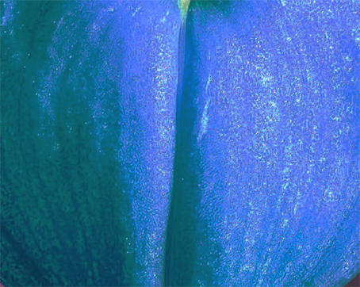
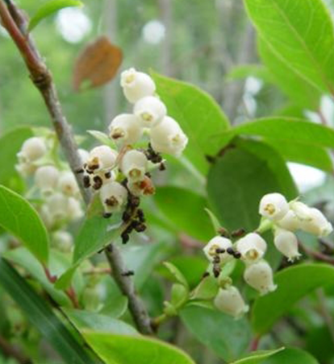
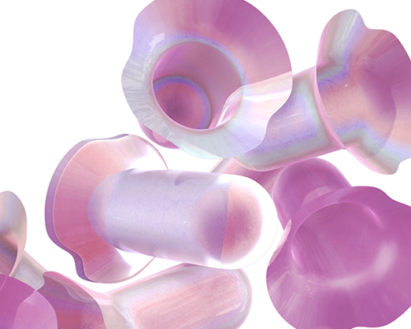
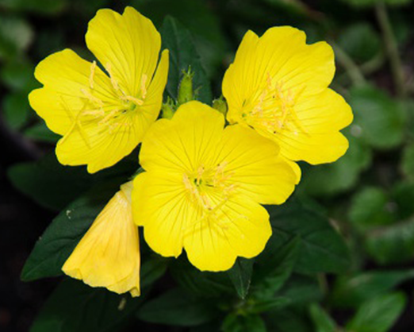
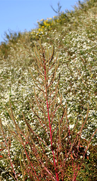
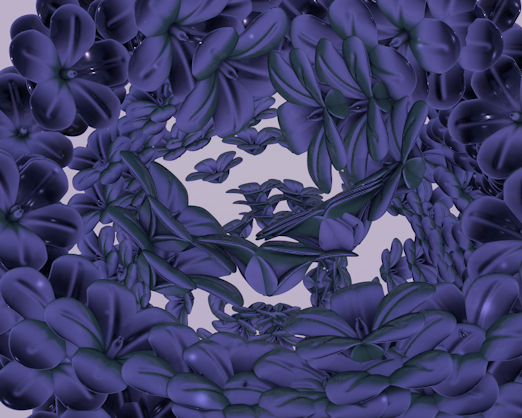
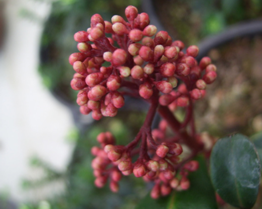

Nature
Rythem




달맞이꽃
Evening Primrose, German Rampion
바늘꽃과
두해살이풀

Evening Primrose, German Rampion
바늘꽃과
두해살이풀
모새나무
Sea blueberry
진달래과
상록활엽관목

Sea blueberry
진달래과
상록활엽관목
긴이삭비름
Amaranthus palmeri S.Watson
비름과
1년생 초본
Amaranthus palmeri S.Watson
비름과
1년생 초본

흰꽃나도사프란
Autumn Zephyrlily
수선화과
상록성 여러해살이풀

Autumn Zephyrlily
수선화과
상록성 여러해살이풀
Nature Rythem
식물은 멀리서 보면 바람에 흔들리면서 외곽의 곡선으로 다양한 리듬을 가지고 있습니다.
그리고 가까이서 보면 잎맥, 꽃잎의 뭉친 모습, 확대했을 때 모습은 또 다른 리듬을 가지고 있습니다.
Nature Rythem은 당신에게 식물의 리듬감을 보여주며 그것이 어떤 식물인지 그래픽으로 보여주고자 했습니다.
어쩌면 보기 힘든, 어쩌면 당신이 이미 키우고 있는 식물의 다른 모습을 보며 새로운 리듬감을 느끼길 바랍니다.
한경대학교 2021 1학기 디지털퍼블리싱1 A02 2018286061 진해인 Nature Rythem